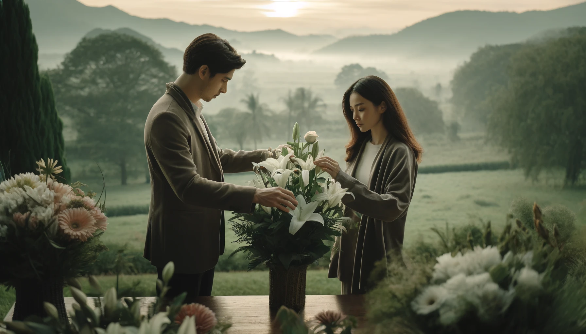

How to Choose Flower the Perfect Flower for Any Occasion
Published on April 19, 2024 | Hiyas Flowershop
Choosing the perfect flower for any occasion is more than just picking up the prettiest bouquet; it's about conveying a message, enhancing the ambiance, and creating lasting memories. Flowers speak a universal language, touching hearts and uplifting spirits, whether it's a celebration, a solemn remembrance, or a spontaneous gesture of love. This guide will help you navigate the delicate nuances of floral selection, ensuring that your choice resonates perfectly with the occasion and leaves a profound impact.

Step 1: Consider the Occasion
Different events call for different floral expressions. For celebrations like birthdays or weddings, vibrant and joyful flowers such as roses, lilies, and daisies are perfect. They symbolize happiness and prosperity. In contrast, for more somber occasions like funerals, choose flowers that offer a sense of peace and respect, such as white lilies or chrysanthemums. Understanding the event's nature helps in selecting flowers that enhance the intended mood and message.
Step 2: Understand the Language of Flowers
Each flower has its own unique symbolism which can significantly affect how your gesture is received. For example, roses are widely recognized for love and admiration, with each color expressing different emotions—red for deep love, yellow for friendship, and white for purity. By choosing flowers based on their meanings, your floral gift carries a deeper sentiment tailored to the occasion and your feelings.
Step 3: Tailor to the Recipient's Preferences and Personalities:
The final step in choosing the perfect flowers is considering the recipient's tastes and personality. If the recipient loves nature, a bouquet with wildflowers and rustic elements might be ideal. For someone with a modern taste, opt for a sleek, minimalistic arrangement with bold colors or unique blooms. This personalized approach ensures that the flowers will not only be appreciated but also feel special and thoughtfully chosen.